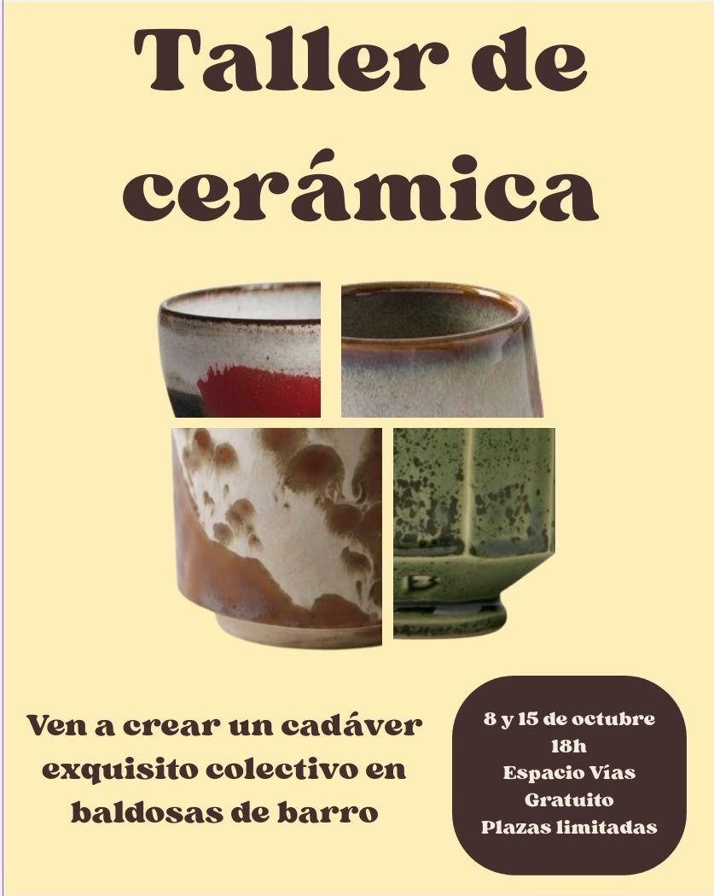
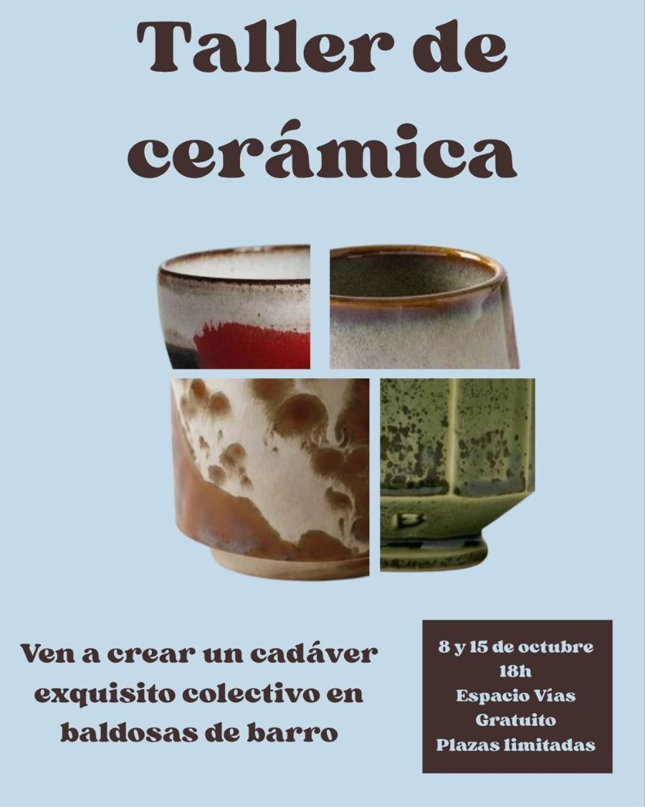
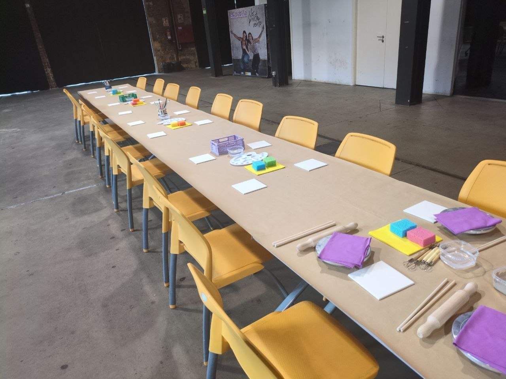
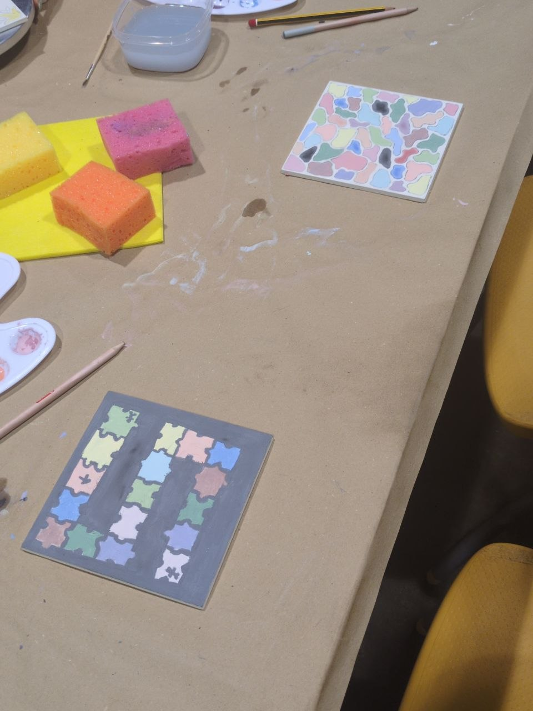

Tierra colectiva
Un cadáver exquisito en baldosas de barro, creado entre muchas manos. Esto es lo que estás viendo en la exposición.
Ver el procesoQué es Tierra colectiva
Tierra colectiva fue un taller de cerámica dentro de CUL 26 para fomentar el ocio y la creatividad entre jóvenes. Cualquiera podía venir a crear un mural colectivo en baldosas de barro, sin experiencia previa.
El mural funciona como un cadáver exquisito: un juego creativo en el que cada persona aporta su parte sin conocer el resultado final. Cada participante pintó su baldosa, y al juntarlas todas apareció una imagen que nadie había planeado entera.


Empezar con un azulejo en blanco
Preparamos una mesa larga en Espacio Vías con una baldosa blanca para cada persona, pinceles, esponjas y paletas de colores. Esas baldosas eran azulejos de bizcocho: barro que ya se había cocido una primera vez.
La primera cocción, el bizcochado, se hace a una temperatura relativamente baja, entre unos 900 y 1.040 °C. En ella el barro, que hasta entonces era frágil y se deshacía con agua, se vuelve un material duro que ya no se ablanda. Sigue siendo poroso, y esa porosidad es justo lo que permite pintarlo después.

Pintar sin ver el conjunto
Cada persona dibujó su diseño a lápiz y lo rellenó de color con pinceles y esponjas. Había flores, manchas, piezas de puzle, letras y patrones. Nadie sabía qué estaban pintando las demás: era el juego del cadáver exquisito.
Los colores que se ven al pintar no son los definitivos. Antes del horno suelen verse apagados y mates, y por eso hay que imaginar cómo quedarán después.



Qué pasa dentro del horno
Una vez pintadas, las baldosas se colocan en las estanterías del horno. En este caso esa segunda cocción llega a más de mil grados.
Del polvo al vidrio
El esmalte se aplica líquido sobre el bizcocho, y la pieza "bebe" el agua y deja sobre la superficie una capa uniforme de polvo de esmalte. En el horno, ese polvo funde y se convierte en una capa de vidrio que recubre la pieza.
Qué cambia
El color se transforma: el polvo mate se convierte en un vidrio que puede ser brillante o mate, según el esmalte. La pieza se vuelve impermeable y resistente, y adquiere su acabado final. La primera cocción endurece y prepara; la segunda sella y da el acabado.
Por eso el mural que se expone es distinto de lo que se veía sobre la mesa: los mismos dibujos, con colores más intensos y una superficie vidriada.

La colectividad
Lo más importante no es ninguna baldosa por separado, sino lo que ocurre al juntarlas. Cada cuadrado conserva la huella de quien lo pintó, con sus trazos, sus dudas y sus decisiones. De cerca ves a cada persona. De lejos, ves una sola imagen compartida y llena de sorpresas.
Datos
¿Te gustaría hacer cerámica?
Pronto abrimos taller en Luis Carmona 13, León, con cursos mensuales de modelado. Déjanos tus datos y te avisamos.
Quiero que me avisen